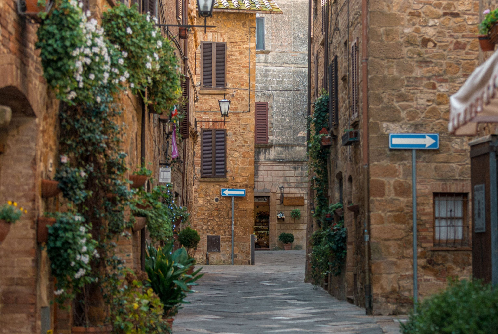
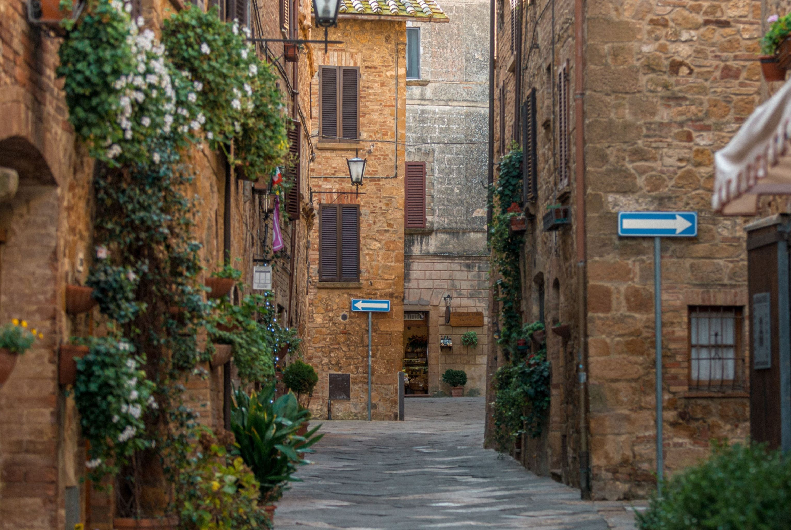

Esplora la Magia
Unisciti a noi per trascorrere un soggiorno unico ed
indimenticabile in un luogo che incarna la perfetta fusione tra modernità e tradizione. Le nostre porte sono aperte
per farti vivere un'esperienza che ti lascerà senza parole.
Immerso nella magica Maremma, il nostro hotel offre un'oasi di tranquillità e bellezza. La recente ristrutturazione
ha arricchito ogni angolo con tocchi contemporanei, pur preservando con amore il calore e l'essenza della tradizione.
Ti sentirai in dolce armonia con il paesaggi mozzafiato, mentre il nostro staff ti coccolerà con i migliori comfort e
servizi di qualità. E se desiderassi esplorare, ci troviamo a soli pochi chilometri da
Firenze e da altri borghi incantevoli, pronti ad accoglierti con le loro storie e le loro tradizioni.


 
